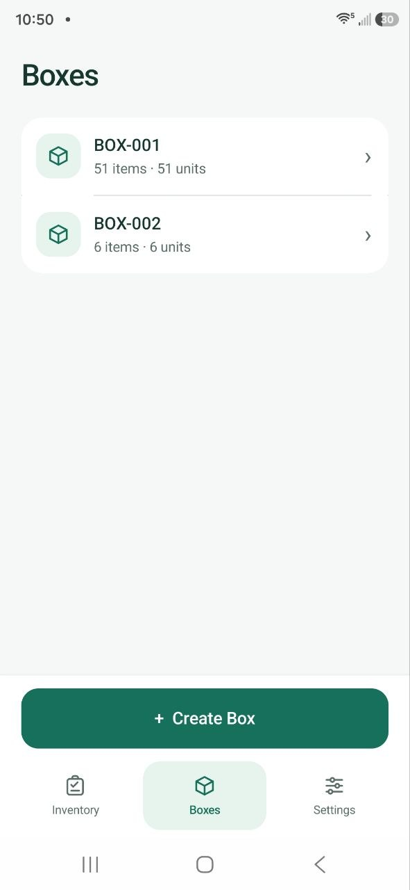
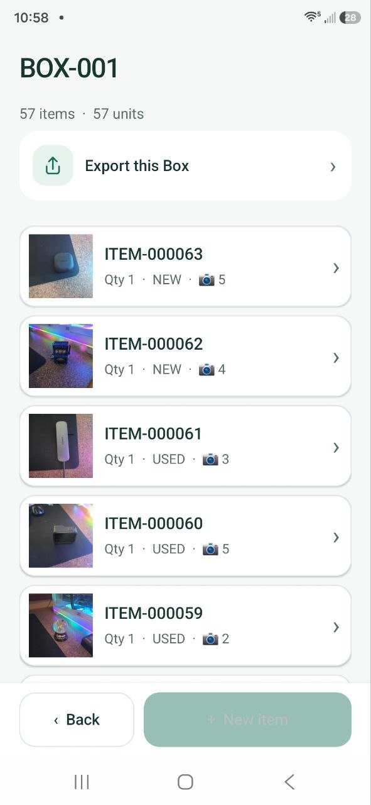
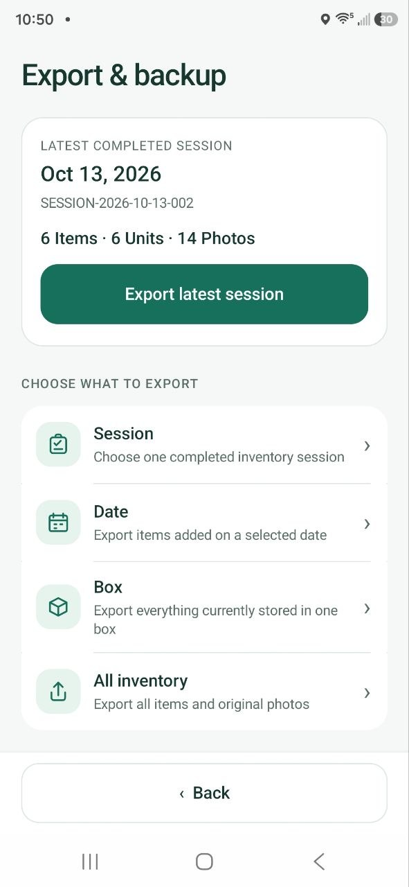
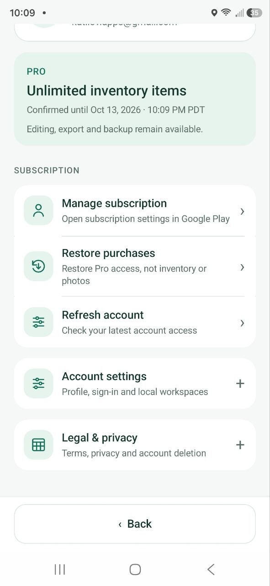

Shared company inventory
Invite employees as Editors or Viewers, with the Owner managing company access.
Inventory for personal storage and teams.
Keep photos, items, boxes and storage locations organized in one app. Invite employees with access roles, sync company inventory across devices and find the right box with QR labels.
Invite employees as Editors or Viewers, with the Owner managing company access.
Keep company items, boxes and photos synchronized through your company workspace.
Organize personal and company inventory into storage locations, each with its own boxes.
Move items between boxes and move entire boxes between storage locations within the same workspace.
When your role permits deletion, move the contents elsewhere or delete everything after confirmation.
Create box QR labels and use the built-in scanner to open the right box quickly.
Preview QR labels, save them as PDF and print them using a regular or label printer.




The company owner chooses the employee email and role, creates a single-use invitation code and shares that code. FastStock does not send the invitation email automatically.
Owners manage company inventory and access. Editors can add, edit and move items and work with photos, but cannot delete inventory. Viewers can read and export company inventory. Company photo access requires active membership and a verified email.
Company records and photos synchronize while the app is open: after changes, periodically and when you request a sync. Synchronization needs a connection and does not run continuously while the app is closed. Selecting a company does not automatically upload your personal workspace.
Choose whether to move its contents or delete everything after confirmation. Available actions depend on your role. Check the contents before confirming deletion. The default storage location is protected, and unfinished or queued drafts can block deletion.
Company backups are for safekeeping. They are not a way to restore shared company inventory into a personal workspace or roll back company changes.
Preview the QR labels or save the PDF first. Printing uses Android printing and requires a compatible installed print service or driver for your regular or label printer.
Company inventory records synchronize through the authenticated backend. Company photos are stored in private Firebase Storage and are available to active company members with verified email under their access roles. Selecting a company does not automatically upload your personal workspace.
Get FastStock: Inventory & Storage for Android on Google Play.